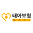

시민일보 = 정수기렌탈 가격비교사이트 이용해야 안전
렌탈포유에서는 위의 다양한 생활가전제품을 합리적인 비용으로 렌탈이 가능하며, 전문상담원의 상담을 통해 각 소비자에게 맞는 제품을 추천받을 수 있고 모델에 따라 사은품 선택도 가능하여 생활가전제품 렌탈을 생각하는 소비자들이라면 눈여겨볼 만하다.
한국금융신문 = 정수기렌탈 가격비교사이트 통한 렌탈 이용자 증가추세
이와 관련 정수기렌탈 비교사이트 '렌탈포유' 관계자는 “생활가전 렌탈 비교서비스는 한눈에 주요 렌탈업체들의 다양한 모델 비교가 가능하고 상담을 통해 선택할 수 있다는 장점이 있으며, 최근에는 전통적인 렌탈의 대명사인 정수기나 비데를 넘어서 제품의 렌탈 범위가 폭넓게 확대되고 있다.”고 밝혔다.
아크로팬 = 정수기렌탈 가격비교사이트 이용해야 안전
작년에 이어 올해도 '대여(렌탈) 상품'이 각광을 받고 있다. 불황이 지속되면서 초기 비용이 적게 들고, 대여하는 동안 무상 AS가 가능해 '합리적 소비'를 추구하는 현대인들과 잘 맞아 떨어졌다는 분석이다.
전자신문 = 정수기 렌탈 가격비교사이트 통해 렌탈하는 이용자 늘어
생활가전업계가 새해를 맞이하여 다양한 제품들을 선보이고 있다. 하지만 불황이 지속되면서 소비자의 합리적 소비에 대한 관심, 소유보다 이용을 중시하는 트렌드가 확산되고 있다.
이투뉴스 = 정수기렌탈 가격비교사이트를 활용해 렌탈해야 유리
최근 정수기 회사별로 신제품 출시와 더불어 여러 상품들이 다양하게 시장에 나오면서 정수기렌탈을 하려는 소비자들의 고민이 깊어지고 있다. 업체마다 다양한 상품이 있기 때문에 자신에게 맞는 최적의 모델 선택을 어려워하고 있는 것이다.
아시아뉴스통신 = 정수기 렌탈은 가격비교사이트 통해 렌탈해야 유리...안마의자, 공기청정기 렌탈도 증가 추세
직장인 박모씨(31)는 신혼집을 마련하고 난 뒤 정수기와 안마의자 렌탈을 위해 상품을 알아봤다. 수많은 상품들 가운데 어떤 모델을 선택해야 합리적인 렌탈료로 이용할 수 있는지, A/S등 사후관리는 어떠한지 등을 렌탈 비교사이트의 가입상담 도움을 받아 만족스런 효과를 누릴 수 있었다.
경향신문 = 가습공기청정기, 안마의자, 정수기... “생활가전 렌탈은 가격비교사이트 이용해야 안전”
인천에 거주하는 서모씨(29)는 얼마 전 정수기 렌탈 약정이 만료되어 사은품을 받고 신규 가입했다. 이 후 전에 사용하던 업체에 해지신청을 했는데 난데없이 약정이 9개월 남았다는 황당한 얘기를 들었다. 가입 당시 추가 약정에 대한 사전정보가 없었던 이 씨는 억울했지만, 어쩔 수 없이 위약금을 물어냈다.
전자신문 = 정수기, 안마의자, 가습공기청정기 등 생활가전 렌탈은 가격비교사이트 이용해야 유리
경제적 부담도 덜고 원하는 효용도 바로 누릴 수 있다는 장점이 가정용 렌탈제품 뿐아니라 매장, 사무실 등 업소용 렌탈 서비스의 활성화로 이어지고 있으며 렌탈상품의 범위가 점점 넓어 지는 등 새로운 형태로 진화하고 있다.
데이터넷 = 정수기렌탈, 가격비교사이트 통해 가입해야 안전
가입 시 과도한 사은품을 약속하는 곳은 사기일 가능성이 높기 때문에 합리적인 선에서 신뢰성 있는 업체로 가입하는 것이 중요하다는 것을 강조한다.
환경일보 = 정수기렌탈 가격비교사이트를 통해 렌탈하는 이용자 늘어
생활가전업계가 올 가을 혼수시즌과 이사철에 발맞추어 다양한 제품들을 선보이고 있다. 하지만 불황이 지속되면서 소비자의 합리적 소비에 대한 관심, 소유보다 이용을 중시하는 트렌드가 확산되고 있다.
아이티데일리 = 정수기렌탈 가격비교사이트를 통한 이용고객 증가!
정수기추천, 직수형정수기렌탈, 얼음정수기렌탈, 미니정수기렌탈 등 종합 렌탈 비교사이트로 유명한 ‘렌탈포유’ 관계자는 “정수기렌탈 비교사이트에서는 동양매직, 쿠쿠전자, 청호나이스, LG전자, 루헨스, 현대위가드 등 한눈에 주요 렌탈업체들의 다양한 모델 비교가 가능하고 상담을 통해 선택할 수 있다는 장점이 있다.
디지털타임스 = 정수기렌탈 가격비교사이트를 활용해 렌탈해야 유리
자신에게 가장 알맞은 제품을 선택하기 위해 최근 소비자들은 정수기 렌탈 비교사이트에서 상담을 받고 렌탈을 받는 방식을 선호하고 있다.
CCTV뉴스 = 정수기렌탈 가격비교사이트를 활용해 렌탈해야 유리
가정에서 생활가전으로 이용할 수 있는 렌탈에 대한 의식이 확대되면서 최근에는 정수기, 비데, 공기청정기 등 렌탈의 대명사라고 할 수 있는 기존 제품들뿐만 아니라 제습기, 연수기, 전기레인지, 식기세척기, 운동기구, 안마의자 등 다양한 상품들이 많은 관심을 받고 있는 추세이다.
스포츠서울 = 휴대폰 사진, 문자 전송으로 홈페이지에 초단간 업로드 '올림서비스' 편리하네!
전에는 휴대폰 사진을 홈페이지에 올릴 때 pc로 파일을 이동한 후 홈페이지 관리업체로 넘겨서 업로드 요청을 하거나 본인이 직접 관리자 계정으로 들어가 로그인을 하고 업로드 해야 하는 번거로운 과정이 반복 되었다.

경향신문 = 지카 바이러스 태아보험으로 대비해야
예비 엄마 아빠 사이에 자리잡은 태교여행의 발목을 지카 바이러스가 잡고 있다. 위험 지역에 포함되어 있지 않다 하더라도 점점 전세계로 퍼져가는 상황에 임신부이거나 임신을 준비 중인 여성에게 지카 바이러스 등 신종 바이러스와 질환은 두려움의 대상이다.
코리아타임즈 = ‘태아보험.어린이보험’ 비교해야 유리
최근 환경적인 요인과 시대적인 요인으로 인해 소중한 우리 아이들이 과거보다 질병과 사고의 위험에 많이 노출되고 있고 원인을 알 수 없는 아토피나 A형 인플루엔자 와 같은 신종 질병으로 인해 아이들에게 어린이보험. 태아 보험 하나쯤은 필수적으로 가입해 주어야 할 필요성이 증가 하고 있다.
전자신문 = 태아보험, 어린이 보험 전문 사이트, 통합 비교 서비스 가능해 인기
가정에서 생활가전으로 이용할 수 있는 렌탈에 대한 의식이 확대되면서 최근에는 정수기, 비데, 공기청정기 등 렌탈의 대명사라고 할 수 있는 기존 제품들뿐만 아니라 제습기, 연수기, 전기레인지, 식기세척기, 운동기구, 안마의자 등 다양한 상품들이 많은 관심을 받고 있는 추세이다.
스포츠서울 = 태아보험, 비교사이트 통한 가입자 증가
태아 보험은 저체중아, 황달, 쇄골골절 등 출생 후 발생할 수 있는 질병과 상해에 대한 진료비, 통원비, 수술비를 보장받을 수 있는 보험이다. 호흡기질환, 임신당뇨, 임신중독 등 임신 합병증의 발병률이 높아지면서 이로 인해 선천성 이상아, 저체중아, 미숙아 출산의 위험이 높아지고 있는 주세에 있어 태아 보험의 중요성이 증대되고 있다.
데이터넷 = 언론홍보 전문대행사 ‘미디어디’ 최저가 보도자료 배포서비스 눈길
스마트 시대가 되면서 소비자들은 스마트 기기를 이용하여 온라인을 많이 접하고 있다. 따라서 자연스러운 광고 효과를 심어주기 위해서는 온라인을 이용한 마케팅을 진행하는 것이 기존의 광고 방법들보다 가격대비 훨씬 효과적이라는 결론이 나왔다.
한국금융신문 = KT SK LG 초고속 인터넷가입 제대로 신청하는 방법은? ‘비교사이트 활용’
최근 초고속 인터넷가입 비교사이트들에서는 한눈에 여러 통신사의 가입 조건 및 혜택을 비교해보고 선택할 수 있도록 하고 있다. 비교사이트는 초고속 인터넷가입, 각종 결합상품 등 각 통신사의 다양한 정보에 대한 비교가 수월하다.
스포츠서울 = LG,SK,KT 초고속 인터넷가입, 비교사이트 이용하면 더 많은 정보 확인 장점
직장인 박모씨는 신혼집을 마련하고 나서 기가인터넷을 설치하기 위해 인터넷가입을 알아보고 있다. 수많은 상품들 가운데 어떤 상품으로 가입해야 저렴한 비용으로 인터넷을 이용할 수 있는지, 또한 고객들에게 어떤 혜택을 제공해주는지, 사후관리는 어떠한지 등을 인터넷가입 비교 사이트의 도움을 받아 차근차근 살펴보고 있다.
경향신문 = 초고속 인터넷가입 비교사이트 소비자 만족도 높아
LG, SK, KT의 인터넷가입 결합상품 마케팅이 활발하다. 결합상품이란 휴대폰, 초고속,기가인터넷, 인터넷tv(iptv),인터넷전화 등을 묶어서 할인된 가격에 판매하는 상품이다.
디지털타임스 = LG,KT,SK 초고속 인터넷가입, 맞춤 인터넷가입이 소비자에게 이득
노원구에 사는 최모씨는 최근 사용하고 있던 인터넷의 약정기간이 끝나 기가인터넷으로 변경하기로 하고, 인터넷가입 시 현금과 사은품을 많이 주는 곳을 찾기 위해 인터넷으로 인터넷설치, 인터넷가입 현금사은품 많이 주는곳 등을 검색해서 사은품과 현금 혜택이 가장 많은 업체를 골라 가입했다. 하지만 다음달 요금명세서를 보고 이용요금이 비싸게 책정되어 있는 것을 보고 사은품과 현금혜택만 보고 선택한 자신을 후회했다.
전자신문 = KT·SK·LG 인터넷가입, 비교사이트 이용이 소비자에게 유리해
수많은 인터넷가입 광고와 기가인터넷가입, IPTV, 인터넷전화 가입 상품 가운데 어떤 상품을 가입해야 유리할지, 어떤 혜택이 제공되는지, 믿을 수 있는 업체인지, 사후관리는 어떠한지 꼼꼼히 따지다 보니 선뜻 고르기가 쉽지 않았다.
코리아타임즈 = 초고속인터넷가입 설치, 현명한 가입 방법
주부 이정아(29세,가명)씨는 인터넷가입을 알아보는 중이지만 쉽게 결정을 못하고 있다. 예전에 사은품만을 우선시 했더니 과장광고와 불친절한 서비스의 피해를 경험했기 때문이다.
디플로마티크 = 맞춤형 초고속인터넷 비교사이트 ‘더드림넷’, 정확한 비교·합리적 가입 방법 제공
계속되는 경기 불황속에 세계 경제가 위축되면서 우리나라 또한 그 여파를 피해갈 수 없이 큰 타격을 받았다. 하지만 이러한 상황에서 광기가인터넷출시 등, 초고속인터넷 시장 만큼은 예외라고 한다.
경향신문 = 타지역서비스 전문업체 더드림아이티, ‘더드림 마케팅 연구센터’ 설립
더드림 마케팅 연구센터는 앞서 검색등록, 114, 네이버지도순위, 블로그, 로컬링크 지역광고 노출, 뉴스기사, 솔루션, 중국광고 대행 등의 마케팅으로 인기가 많았다고 한다. 더드림아이티는 이번 더드림 마케팅 연구센터 설립을 통해 통신, 지도광고, 모바일마케팅, 언론 등을 종합해 통해 2015년 업계 1위를 달성한다는 계획이다.